The people behind the magic
Meet Our Coaches
A passionate, close-knit team — many of whom started at TJ's as children themselves. Together we bring over a century of gymnastics experience to every single class.
Heading Up the Club
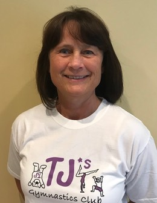
Gill Holland
General Manager & Head Coach
Level 3 · General & Pre-schoolGill founded TJ's in September 1988 and has been running it for 36 wonderful years. She holds Level 3 qualifications in both General and Pre-school Club Coaching, and it's a joy seeing former gymnasts now bringing their own children through the door.
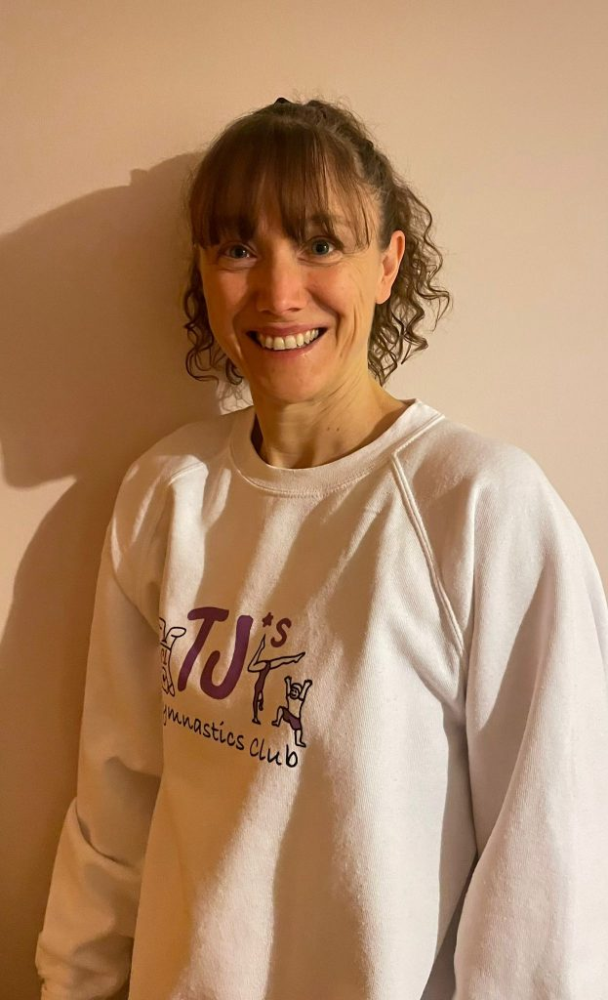
Natalie Garlick
Head of Gymnastics & SEN Co-ordinator
Level 3 · General & Pre-schoolCoached by Gill as a teenager, Natalie has been part of the TJ's team since 1997. She leads the general gymnastics programme, heads up our competition and display teams, and is our Special Educational Needs Co-ordinator.
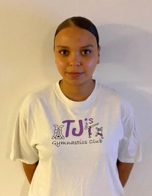
Jade Shaw
Deputy Head Coach
Level 2 UKCC · Pre-school Add-onJade first came to TJ's aged one in Toddler Gym and progressed all the way to our Wednesday squad — the ultimate TJ's story! She took on the Deputy Head Coach role in January 2023. Her two daughters, Kyla and Nyrah, attend the club too.
Nelum Samara
Safeguarding & Welfare Officer
Coached by Gill during her school days, Nelum reconnected with TJ's via social media years later. She joined as Safeguarding and Welfare Officer in September 2024 and is thrilled to be actively involved in the sport she loves once more.
Coaches & Assistants
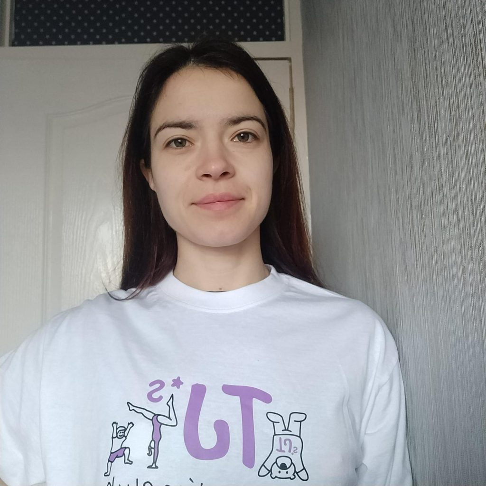
Hazel Pithers
Hazel joined the coaching team in January 2023. She holds her Level 2 coaching qualification and is training to qualify for stunt work.
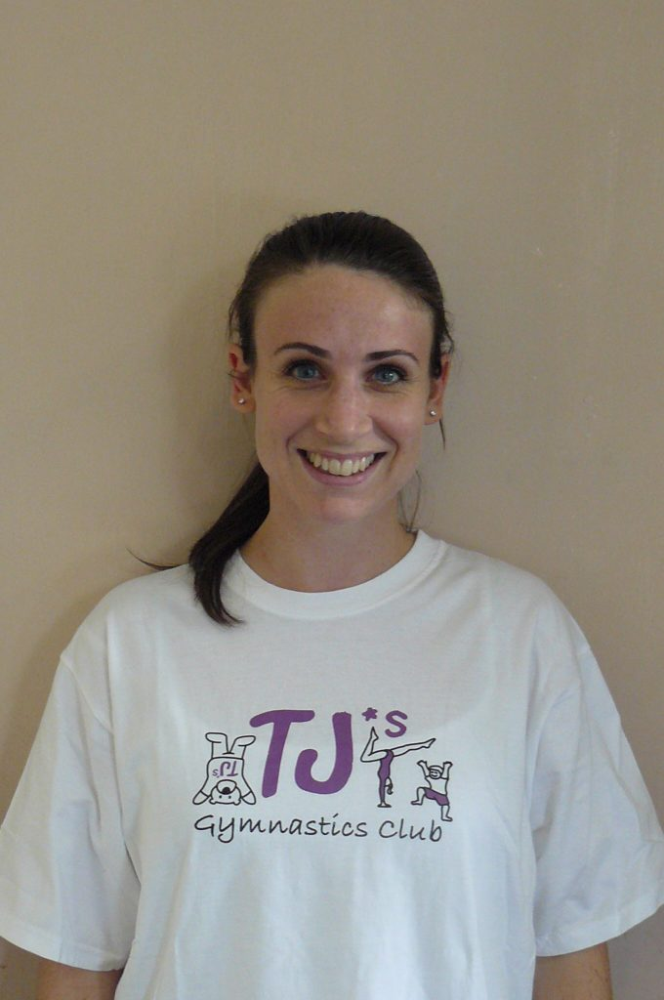
Hannah Pettit
Hannah was coached at school by Gill and later joined TJ's Toddler Gym with her daughter. Mum of three, she returned to coaching in January 2023 and assists our Mini Gym classes. She holds her Level 1 General Gymnastics qualification.
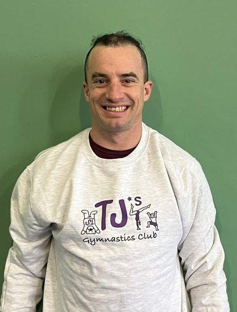
JV Mattei
JV was introduced to TJ's when his daughter joined Mini Gym in January 2024. A passionate Street Dance coach, he began assisting at TJ's straight away and is loving being part of the team. He holds gymnastics instructor qualification.
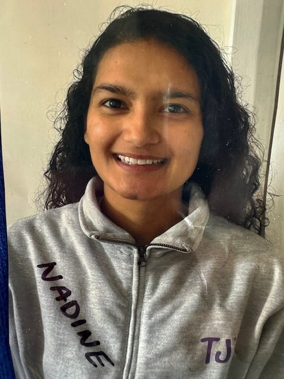
Nadine Henry
Coached by Natalie as a child, Nadine reconnected with TJ's through a social event. She is a qualified physio therapist and holds the Level-1 Assistant qualification.
Our Junior Helpers
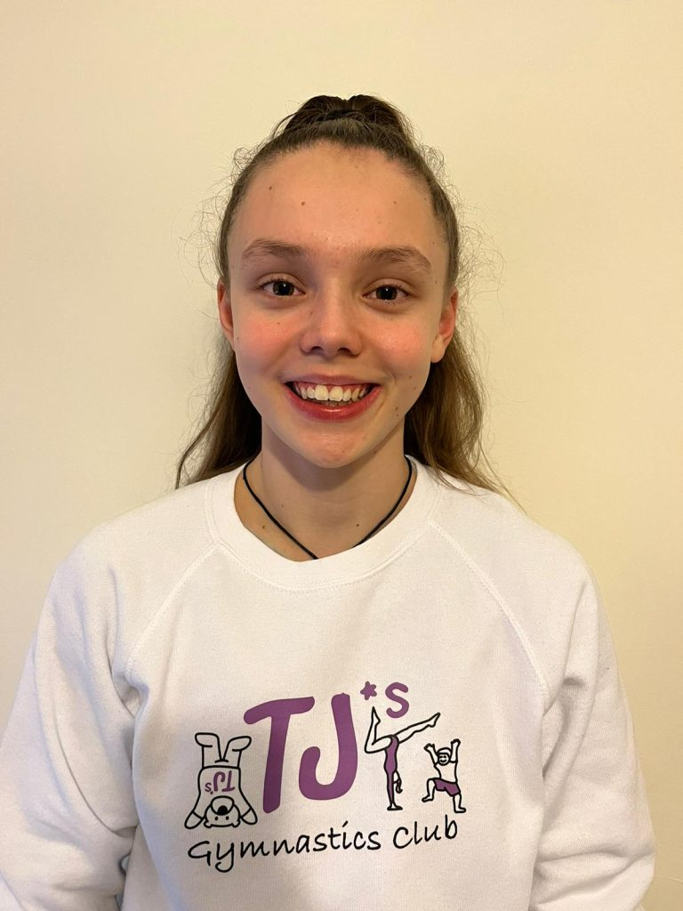
Lucy Garlick
Natalie's daughter! Lucy is a member of the GB Climbing squad and has competed in the USA, Russia, South Korea and China. She has been assisting in coaching since September 2022 and holds the Gymnastics Helper award.
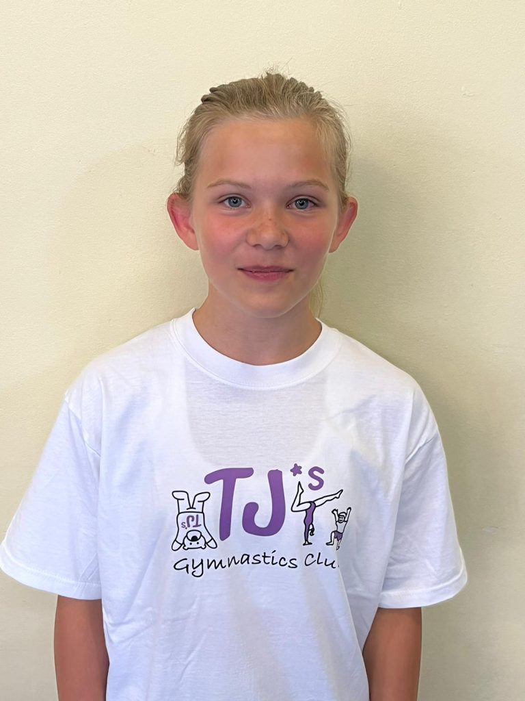
Bea Gray
Bea was a member of our Elite Squad until December 2022, assisted for her Duke of Edinburgh award, and has chosen to continue coaching. A keen rugby player and Ball Girl at Wimbledon 2024. Holds the Gymnastics Helper award.
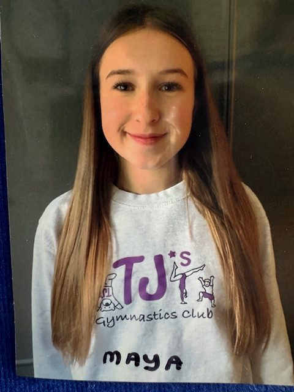
Maya Francis
Maya was a member of our Elite Squad until April 2024 and has now chosen to focus on coaching. A keen dancer and Year 10 student, she holds the Gymnastics Helper award.
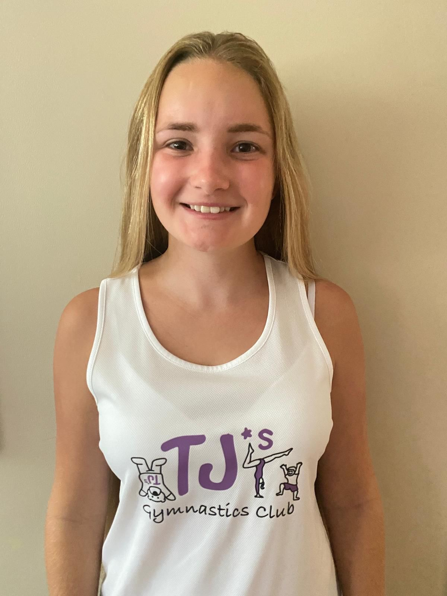
Cara Kelly
Cara also started TJ's aged 1! She was a member of our Girls' Squad until July 2024 and has now chosen to focus on coaching. A Year 10 student, she holds the Gymnastics Helper award.
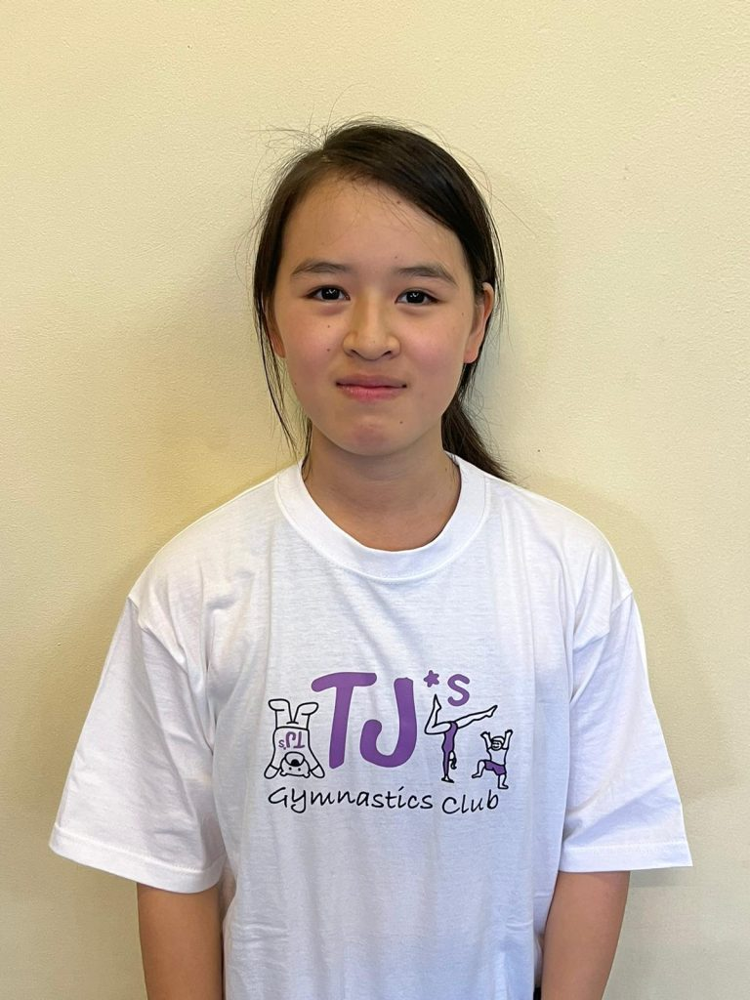
Mio Nakashima
Mio was a member of our Elite Squad until December 2022 and assisted for her Duke of Edinburgh award. In April 2024 she left to study for a year in Japan — we hope to see her back in 2025!